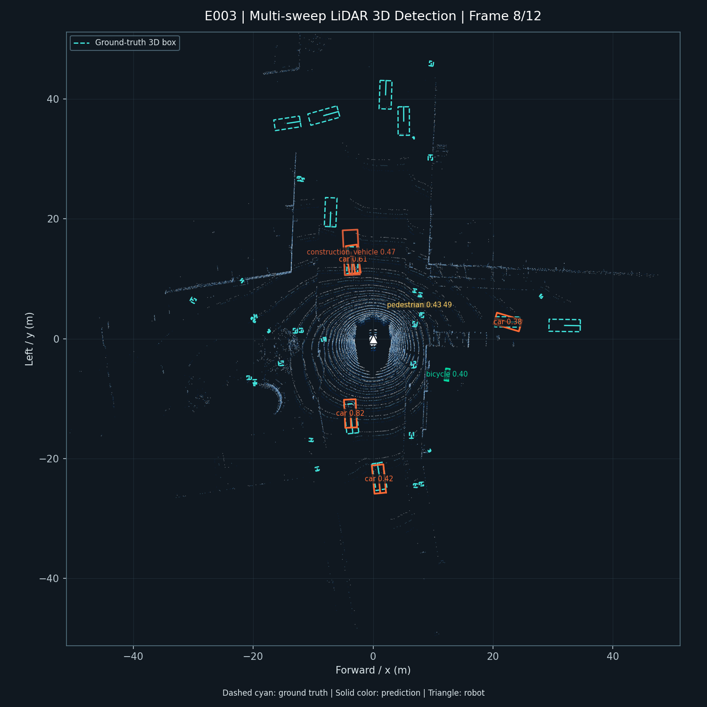

RESUME PROJECT / ROBOT PERCEPTION
移动机器人
LiDAR 3D 目标检测
基于 OpenPCDet、nuScenes mini 与 ROS 2 构建的端到端感知项目：从多帧点云训练、官方评测，到 G1 风格传感器仿真与检测结果展示。
连续场景检测结果

浅色为 LiDAR 点云，青色虚线为真实框，彩色实线为模型预测框。白色三角表示机器人位置和朝向。
实验指标
+26.3%mAP：单帧 `0.0931` 提升至三帧时序融合 `0.1176`。
+32.4%Pedestrian AP：`0.3857` 提升至 `0.5105`。
81-131ms除首次预热外的检测处理延迟范围，RTX 4060 Laptop。
工程闭环
01 DATAnuScenes 连续 LiDAR 点云与位姿
02 TRAINPointPillars 基线与三帧时序融合
03 EVALmAP / NDS 与行人类别对照实验
04 DEPLOYROS 2：PointCloud2、位姿对齐、Detection3DArray
05 DEMOG1 传感器级仿真、MarkerArray、浏览器回放